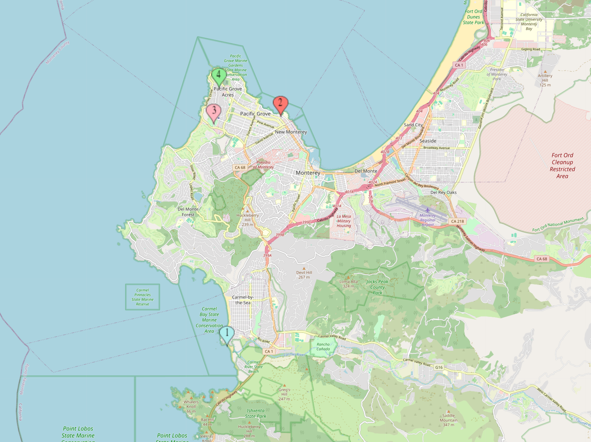
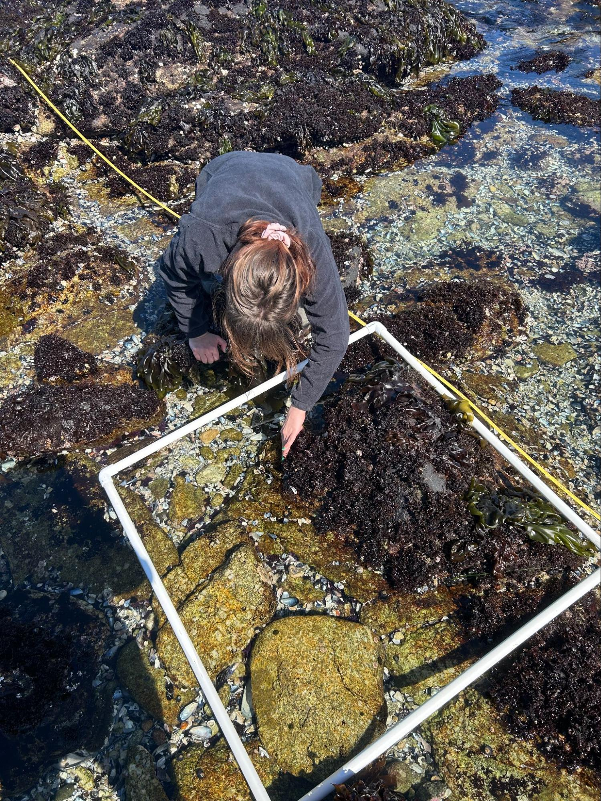
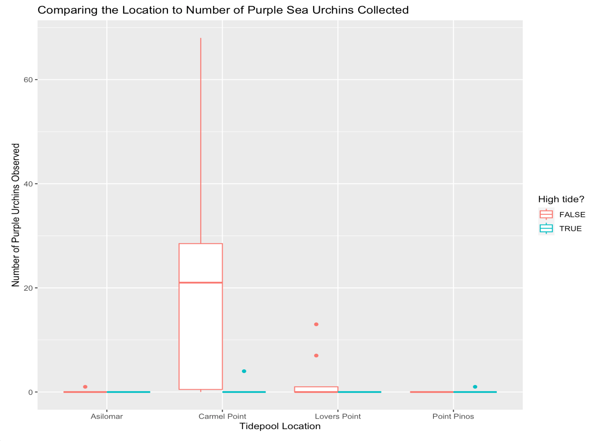
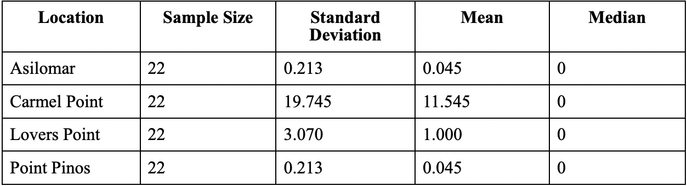
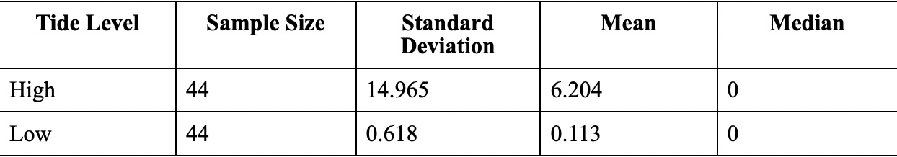
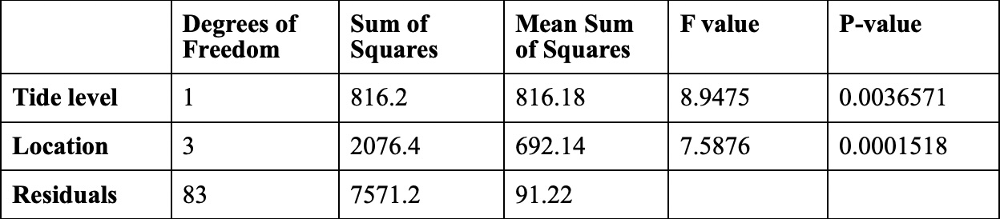

Purple Urchin Experiment
Comparing the Number of Strongylocentrotus purpuratus (Purple Sea Urchin) to the Tide Level
Abby Farr and Aiden Roach
May 12, 2025
Introduction
Background
Purple Sea Urchins (Strongylocentrotus purpuratus) live in the waters along the Eastern Pacific Ocean from British Columbia to Baja California, spanning intertidal and subtidal habitats up to 160 m deep (Morris R et al., 1980). Urchins can inhabit either kelp forests or urchin dominated “barrens” that otherwise lack a variety of species. When in kelp forests, urchins remain stationary and feed on pieces of kelp that drift by. When in barrens, urchins become active and search for drift kelp and juvenile kelp. By preying on juvenile kelp, the urchins prevent the establishment or reestablishment of a kelp forest (Pearse, 2006).
While reproduction follows an annual cycle, breeding season typically lasting from January to March, food must be available for the urchin’s gonads to develop (ScantuarySimon, 2018 and Rogers-Bennett, 2006). If food is available, the urchin population can increase rapidly and cause an urchin barren to develop. Typically, predators such as sea otters (Enhydra lutris) are able to keep urchin populations in check. However the sea otter population has been in decline due to human actions, which has allowed the urchin population to increase recently. Where sea otters are common today, the urchin population is kept in check which has allowed kelp forests to slowly develop and increase local biodiversity (Pearse, 2006). In addition to natural predators, humans have begun harvesting purple urchins mostly for scientific purposes and occasionally harvested by fisheries for food (Rogers-Bennett, 2006).
As the tide levels change throughout the day these organisms experience different environmental conditions. During the summer they go from being submerged in cool waters to being exposed to warm temperatures as the tide lowers. In a study done in the Caribbean, the fluctuations in water levels affected the abundances of some species of sea urchins (Cubit et al.1986). In the same study by Cubit et al. (1986) the researchers found that two populations of sea urchins, Lytechinus variegatus (Green Sea Urchin) and Diadema antillarum (long-spined sea urchin) declined or disappeared during repeated subaerial exposure. While these are not the same species as the one we will be studying Purple Sea Urchins might behave similarly.
Objective
The goal of this study is to investigate if tide levels change the habitat that Purple Sea Urchins inhabit. While Purple Sea Urchins can move, they move at a rate of one foot a minute (Pagés J et al., 2021) making it likely that they will still not be able to move with the tides. By quantifying the amount of Purple Sea Urchins at different tide levels we aim to determine if a researcher or harvester of these marine animals has to take into account the tide level, allowing the collector to optimize their urchin yield.
Methods
Data Collection
To collect data for this experiment we picked five intertidal locations in Monterey County, California: Asilomar, Carmel, Lovers Point, Point Lobos and Point Pinos, because of permits required we could not collect data at Point Lobos. A map of the locations surveyed is shown in Figure 1. A set order of locations was pre-determined using a random wheel generator. At each location we ran two 20 meter transects perpendicular to the water line, one when the tide level is zero feet and the second when the tide level is at one foot for a total of eight transects, four transects at each tide level. To pick where the perpendicular transects would run we ran a transect parallel to the water line and then used a random number generator to pick a number from zero to 20. The perpendicular transect started at the water line and ran 20 meters out. An image of an example quadrant is shown in Figure 2.
After the transect was set we started data collection by placing a half meter by half meter quadrant on the left side of the tape starting at zero meters and then at every two meters from there. Inside the quadrat we counted and recorded the number of Purple Sea Urchins inside the quadrat. We did not count dead Purple Sea Urchins and if the Purple Sea Urchin was touching the boundary of the quadrant it was counted.
Statistical Analysis
In order to compare the number of Purple Sea Urchins at low vs high tide we created a new column where quadrats collected at high tide are labeled as true and quadrats collected at low tide are labeled as false. From there we looked at descriptive statistics for the number of Purple Sea Urchins at each location as well as the number of Purple Sea Urchins at each tide level. We also created two different boxplots again comparing the number of Purple Sea Urchins at each location and the number of Purple Sea Urchins at each tide level.
After we looked at descriptive and visual statistics we analyzed our data using the randomized complete block design (RCBD). Since we have four different locations we collected data from and each location has the same number of experimental units (transects and quadrats) this is the best method for data analysis. We created a linear model looking at the number of Purple Sea Urchins conditioned on tide level and location. After we built the linear model we used anova type 1 to analyze the linear model. We also calculated the relative efficiency to see if using the RCBD model is effective.
We hypothesize that the true mean number of Purple Sea Urchins found at tide level one foot will be less than the true mean number of Purple Sea Urchins found at tide level zero feet across all intertidal locations.
Results
Descriptive Statistics
Based on the descriptive statistics, there appears to be a difference in purple urchin count when we consider the tide level as shown in Table 2. When the tide level was one foot, we observed an average of 7 urchins. This is considerably higher than the observed average of 1 urchin when the tide level was zero feet. Given the ecological damage a single urchin can inflict, we consider the practical effect of tide level to be significant. There also appears to be a difference in purple urchin count when we consider location as shown in Table 1. Carmel Point had the highest observed average with 12 urchins while the other three locations, Asilomar, Lovers Point, and Point Pinos, all had an observed average of 1 urchin regardless of tide level. We would also consider the practical effect of location to be significant given the large differences of observed urchin count between locations.
Analysis
We found very strong evidence that there is a relationship between the number of purple urchins observed and the tide level given the location remains constant based on our test statistic F of 8.9475, dftreatment of 1, dfresidual of 83, p-value of 0.0036571, and α of 0.05. We also found very strong evidence that there is a relationship between the number of purple urchins observed and the location given the tide level remains constant based on our test statistic F of 7.5876, dftreatment of 3, dfresidual of 83, p-value of 0.0001518, and α of 0.05. This result is supported by Figure 3, which shows locations at low tide having a higher purple urchin count compared to the same location at high tide.
Discussion
Based on the descriptive statistics, exploratory data analysis, and the results of the Type I ANOVA, there is a relationship between the number of urchins observed when considering the location of the tidepool and the level of the tide. The largest limitation of this study was likely the limited number of surveys completed at each location. If this experiment were to be repeated, each location should be sampled multiple times at each tide level to better reflect location-based trends in purple urchin counts. Further experiments should include other tide levels to explore the possibility of urchin count varying at a larger scale over a 24 hour period as opposed to a tide difference of only one foot. Another suggestion is to perform the experiment year-round to explore the possibility of urchin counts changing in a seasonal pattern. If a year-round experiment is not possible, then an experiment comparing breeding season counts and non-breeding season counts could be conducted.
References
L. Rogers-Bennett, in Edible Sea Urchins: Biology and Ecology, pp. 393–425.
Pagès, J.F., Bartumeus, F., Romero, J. et al. The scent of fear makes sea urchins go ballistic. Mov Ecol 9, 50 (2021). https://doi.org/10.1186/s40462-021-00287-1
Pearse, J. , Ecological Role of Purple Sea Urchins. Science 314, 940-941 (2006). DOI:10.1126/science.1131888
Thyrring, Jakob, and Christopher D. G. Harley. 2024. “Marine Latitudinal Diversity Gradients are Generally Absent in Intertidal Ecosystems.”Ecology 105(1): e4205. https://doi.org/10.1002/ecy.4205 ECOLOGY 11 of 11
- Sanctuarysimonorg. [accessed 2025 May 14]. https://sanctuarysimon.org/dbtools/species-database/species-info-ajax.php?sID=188.
Figures and Tables
Figures



Tables


